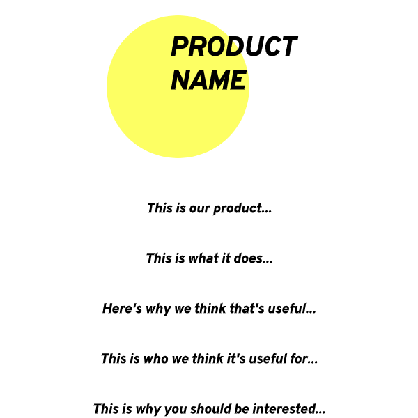

Welcome to Claynce
What is one of the biggest problems with playing tennis on a clay court? It’s the cleaning up process that comes before, during, and after your games. It’s a process that is time consuming, inefficient, and mundane. Therefore, we have come up with a product that will automate this process and make more time for the thing that tennis players love to do most: play the game.
What does Claynce do?
Our robot, when given a task, moves around the court in a predefined pattern, sweeping it and evening out the clay surface with a net attached to the back.
Who is Claynce for?
Since Claynce is a clay-court tennis management robot, that autonomously sweeping/cleaning/leveling-out clay courts, Claynce would be the perfect asset to tennis clubs worldwide, and would save time, money and resources. There are roughly 24,000 tennis courts in the UK alone, and an even more astounding 250,000 courts in the USA. As per standard calculations, clay courts take around 8 minutes to sweep before, during and after matches. For tennis clubs with various courts and bookings throughout the day, the manpower that goes behind maintenance marks for a big factor in budgeting. With Claynce, however, tennis clubs would be able to invest in our long-term product, and allocate their savings to other areas in their expenditures.
Why you should be interested in Claynce?
Claynce is a versatile robot, that with further enhancements, could be applicable for other tennis court materials, and could even go as far as to maintain other sport courts. Claynce integrates localisation algorithm ArUco markers, and a marker-scheme to mobilise itself - integrating modern technology with its hardware.
